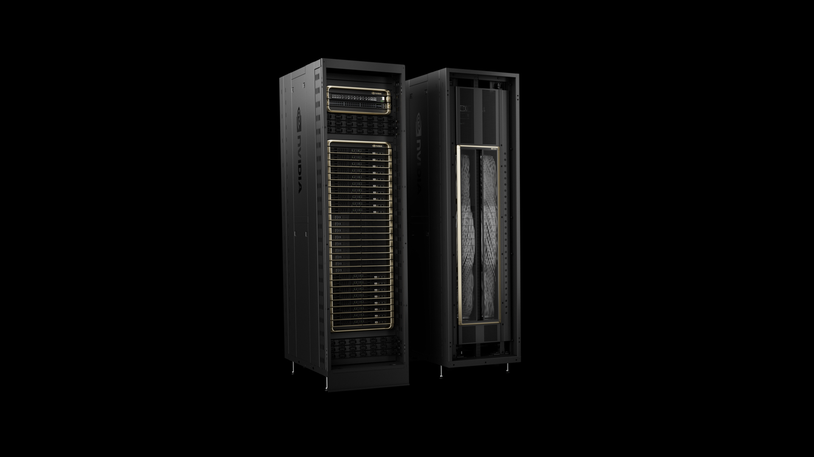

一、导语：史上最大一笔 IPO，正在倒计时
10 月 1 日，Bloomberg 报道 Anthropic 已开始邀请机构投资者在正式 IPO 前质询公司高管。流出的时间表相当具体：10 月 14 日开会，11 月 9 日当周启动路演，目标在感恩节前挂牌。投资者给出的估值预期已经拉到接近 2 万亿美元——一旦成真，它将超过 SpaceX 今年 6 月的 IPO，成为美国历史上最大的一次新股发行。同一天，路透社通过申报文件又挖出另一条线：Anthropic 与 SpaceX 之间最高 845 亿美元的算力合同。
二、背景分析：营收一年涨七倍，亏损也翻了五倍
要理解 2 万亿这个数字，得先看 Anthropic 跑得有多快。它的年化营收（run rate）在 2025 年底还只有约 90 亿美元，到今年 5 月冲到 470 亿，7 月底又过了 650 亿。今年 5 月，它刚完成一轮 650 亿美元融资，估值 9650 亿美元——也就是说，公开市场要给的估值，是私募市场那轮的整整两倍。
但另一面同样扎眼。申报文件显示，Anthropic 2025 年净亏损接近 420 亿美元，比前一年的 83 亿扩大了五倍。烧钱的大头是算力：公司预计未来十年要在六家基础设施伙伴身上至少投 5180 亿美元。它自己在文件里也承认，未来增长"主要受算力供给的限制"。这就是它一边冲刺上市、一边抢签算力合同的原因。
三、核心内容：一份 IPO，两条资本线
时间线：三周内见分晓
按美国 SEC 规则，Anthropic 需要在 10 月下旬公开 S-1 招股书，随后才能进入路演。承销团由摩根士丹利、高盛和摩根大通组成，另有消息称它还在筹备一笔超过 100 亿美元目标的循环信贷额度。它此前已秘密递交上市申请，但因为估值分歧把原定的 10 月上市推迟到了 11 月。

算力线：845 亿美元押在 Colossus 上
路透社查阅的申报文件显示，Anthropic 已签下最高 845 亿美元的算力协议，用于租用 SpaceX 数据中心里的英伟达 GPU，且大部分条款可提前 90 天通知解除。这比今年 5 月双方公开的版本大了近一倍——当时的口径是每月 12.5 亿美元、约三年合计近 450 亿美元，涉及约 32.5 万块 GPU。合同金额翻倍，说明它把上市募资和算力扩张捆在了一起。
对手线：OpenAI 选择不上市
与 Anthropic 形成对照的，是 OpenAI。它以安全担忧为由明确排除了 2026 年上市，转而以约 1.4 万亿美元的估值在私募市场寻求至少 300 亿美元融资。两家最贵的 AI 公司，第一次在资本路径上分了岔：一家抢在感恩节前敲钟，一家继续留在私募。谁对谁错，可能要等两三年才看得清。
四、各方反应：机构看好，但公开市场在犹豫
《金融时报》采访的半数以上投资者认为，仅凭营收增速，Anthropic 就值 2 万亿以上。一位参与认购的投资人这样算账：
「如果 Anthropic 一年涨 800%，就算按最低的 30 倍收入算，那也是 3 万亿美元的公司。」
参照系也很硬：SpaceX 今年 6 月以约 1.77 万亿美元估值上市，募资 750 亿美元（含超额配售达 862 亿），是此前纪录保持者沙特阿美的三倍，认购超额约 3 倍，开盘估值达年收入的 90 倍。但公开市场对 AI 的态度正在转冷——近几个月纳斯达克、韩国 Kospi 上的 AI 相关股票都经历过大跌。半年内第二笔超大型 IPO，本身就是对 AI 行情胃口的一次压力测试。
五、深度解读：定价权从私募交到了公开市场
第一层，这是 AI 资本周期的一个分水岭。过去两年，Anthropic、OpenAI 这类公司的估值由少数私募巨头拍板；一旦 Anthropic 上市，定价权就交给每天用真金白银投票的公开市场。6500 亿的私募估值能不能撑住 2 万亿的公开预期，将直接检验"AI 泡沫论"到底有没有依据。
第二层，算力合同正在变成估值的一部分。845 亿美元、可 90 天退出的算力承诺，既展示了扩张决心，也暴露了它的软肋——如果收入不及预期，这些长周期合同会变成资产负债表上的负担。投资者质询高管，问的多半就是这件事。
第三层，两家公司的分岔会影响整个行业的人才与资本流向。Anthropic 上市后可以用公开股票做并购（它正洽谈以约 60 亿美元收购英伟达投资的 Decart AI）、给员工发流动性；OpenAI 则继续受制于非营利架构和私募节奏。谁能更快把资本转成算力和模型能力，未来两年会看得更清楚。
六、总结
一句话：Anthropic 用一份可能创纪录的 IPO，把 AI 竞赛的决胜点从"谁的模型更聪明"挪到了"谁的资本更便宜"；感恩节前那记钟声，敲响的不只是一家公司的上市，而是整个 AI 行业从私募时代转入公开市场时代的开始。